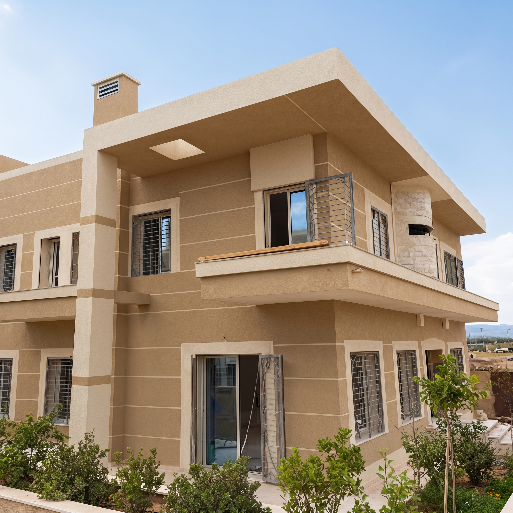

01 / الواجهات والمساحات الخارجية
صباغة الباستا الإسبانية للواجهات
تعد صباغة الباستا الإسبانية (Pasta Espagnole) طلاءً أحادي الطبقة فائق المتانة مخصصاً لتجديد وتكسية الواجهات الخارجية. تحمي جدران البنايات والفيلات بفعالية ضد الرطوبة والأمطار وأشعة الشمس المغربية القوية، مع إضفاء ملمس معماري فاخر وعصري يدوم لعقود.